单细胞下游分析
单细胞专题 | 1.单细胞测序（10×genomics技术）的原理
单细胞专题 | 3.单细胞转录组的上游分析-从BCL到FASTQ
单细胞专题 | 4.单细胞转录组的上游分析-从SRA到FASTQ
单细胞专题 | 5.单细胞转录组的上游分析-从FASTQ到count矩阵
1.数据读入¶
Cell Ranger生成的主要表格文件主要包括3个文件，分别是barcodes, features, matrix三个表格文件，其中barcodes文件存储的是细胞的信息，features存储的是基因的名称信息，matrix存储的是表达量的信息。还有一种数据是作者在GEO数据库直接提供表达矩阵（csv或txt）
(1).读入csv文件的表达矩阵构建Seurat对象¶
Seurat需要的输入信息为表达量矩阵，矩阵行为基因，列为细胞。使用Seurat提供的Read10X函数可以很方便的将10x结果读入到R矩阵中。使用CreateSeuratObject生成Seurat对象，后续分析都是在该对象上进行操作。
rm(list=ls())
options(stringsAsFactors = F)
library(Seurat)
# Load data
dir='./'
Sys.time()
raw.data <- read.csv(paste(dir,"Data_input/csv_files/S01_datafinal.csv", sep=""), header=T, row.names = 1)
Sys.time()
dim(raw.data)
raw.data[1:4,1:4]
head(colnames(raw.data))
# Load metadata
metadata <- read.csv(paste(dir,"Data_input/csv_files/S01_metacells.csv", sep=""), row.names=1, header=T)
head(metadata)
# Find ERCC's, compute the percent ERCC, and drop them from the raw data.
erccs <- grep(pattern = "^ERCC-", x = rownames(x = raw.data), value = TRUE)
percent.ercc <- Matrix::colSums(raw.data[erccs, ])/Matrix::colSums(raw.data)
fivenum(percent.ercc)
ercc.index <- grep(pattern = "^ERCC-", x = rownames(x = raw.data), value = FALSE)
raw.data <- raw.data[-ercc.index,]
dim(raw.data)
有了表达矩阵，直接使用 CreateSeuratObject 函数即可，然后慢慢添加这个表达矩阵的一些其它外部属性，全部代码如下：
# Create the Seurat object with all the data (unfiltered)
main_tiss <- CreateSeuratObject(counts = raw.data)
# add rownames to metadta
row.names(metadata) <- metadata$cell_id
# add metadata to Seurat object
main_tiss <- AddMetaData(object = main_tiss, metadata = metadata)
main_tiss <- AddMetaData(object = main_tiss, percent.ercc, col.name = "percent.ercc")
# Head to check
head(main_tiss@meta.data)
# Calculate percent ribosomal genes and add to metadata
ribo.genes <- grep(pattern = "^RP[SL][[:digit:]]", x = rownames(x = main_tiss@assays$RNA@data), value = TRUE)
percent.ribo <- Matrix::colSums(main_tiss@assays$RNA@counts[ribo.genes, ])/Matrix::colSums(main_tiss@assays$RNA@data)
fivenum(percent.ribo)
main_tiss <- AddMetaData(object = main_tiss, metadata = percent.ribo, col.name = "percent.ribo")
main_tiss
# Filter cells so that remaining cells have nGenes >= 500 and nReads >= 50000
main_tiss_filtered <- subset(x=main_tiss, subset = nCount_RNA > 50000 & nFeature_RNA > 500)
main_tiss_filtered
我们得到了main_tiss_filtered这个变量，是一个Seurat对象，就可以follow我们的教程后后续分析流程啦。参考代码仍然是：
(2).读入10X标准输出的3个文件和融合多个样本数据¶
这三个文件指的是：barcodes.tsv, features.tsv, matrix.mtx。这个情况就比较好处理了，barcodes.tsv就是 cell id，features.tsv就是 gene id，matrix.mtx就是计数 counts 矩阵。
例如:
############### 10X标准输出的3个文件 ##############
# 列出当前目录下所有开头是GSM的文件
fs <- list.files('./data/GSE106273_RAW/','^GSM')
# 然后获取四个样本信息
library(stringr)
samples <- str_split(fs,'_', simplify = T)[,1]
# 设置一个循环，对每个样本信息做同样的事：
#（1）找到包含这个样本的文件(用grepl)
# (2)设置对应的目录名（str_split+paste）然后创建目录（用dir.create）
# (3)将文件放到对应目录(采用的是file.rename)并重命名文件
setwd("data/GSE106273_RAW/")
library(R.utils)
lapply(unique(samples),function(x){
y <- fs[grepl(x,fs)]
folder <- paste(str_split(y[1],'_',simplify = T)[,2:3],
collapse = '')
# 创建文件夹
dir.create(folder, recursive = T)
# 文件重命名：
file.rename(y[1],file.path(folder,"barcodes.tsv.gz"))
file.rename(y[2],file.path(folder,"genes.tsv.gz"))
file.rename(y[3],file.path(folder,"matrix.mtx.gz"))
# 解压，其实不解压也行
sapply(paste0(folder,c("/barcodes.tsv.gz","/genes.tsv.gz","/matrix.mtx.gz")),
gunzip)
})
# 批量读取成10X对象:
# 因为Read10X函数需要对目录进行操作，所以先把目录名提取出来
folders=list.files('./',pattern='[12]$')
folders
# [1] "G1" "G2" "L1" "L2" "NP1" "NP2" "PI1" "PI2"
# 然后使用lapply进行循环(之前出过一期apply系列函数教程，可以查阅一下，
# lapply是对列表或向量进行循环，而apply是对数据框或矩阵操作)
library(Seurat)
sceList <- lapply(folders,function(folder){
CreateSeuratObject(counts = Read10X(folder),
project = folder )
})
# 此时的sceList是一个包含8个10X对象的集合，下一步需要将其合并
sceList
# 合并：
sce_big <- merge(sceList[[1]],
y = c(sceList[[2]],sceList[[3]],sceList[[4]],
sceList[[5]],sceList[[6]],
sceList[[7]],sceList[[8]]),
add.cell.ids = folders,
project = "mouse8")
table(sce_big$orig.ident)
# G_1 G_2 L_1 L_2 NP_1 NP_2 PI_1 PI_2
# 2915 3106 5906 3697 2249 2127 1500 4306
# 保存：
save(sce_big,file = 'sce_big.Rdata') # 保存的数据
在如：
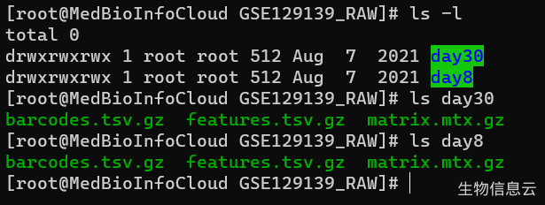
###### step1:导入数据 ######
rm(list=ls())
options(stringsAsFactors = F)
library(Seurat)
library(ggplot2)
library(clustree)
library(cowplot)
library(dplyr)
library(data.table)
samples=list.files('GSE129139_RAW//')
samples
sceList = lapply(samples,function(pro){
#pro=samples[1]
folder=file.path('GSE129139_RAW',pro )
print(pro)
print(folder)
print(list.files(folder))
print( Sys.time() )
sce=CreateSeuratObject(counts = Read10X(folder),
project = pro )
print( Sys.time() )
return(sce)
})
sceList
samples
sce.all = merge(sceList[[1]], y = sceList[-1],
add.cell.ids = samples,
merge.data = TRUE)
as.data.frame(sce.all@assays$RNA@counts[1:10, 1:2])
head(sce.all@meta.data, 10)
table(sce.all@meta.data$orig.ident)
library(stringr)
table(sce.all$orig.ident)
(3).读入h5格式文件¶
############### h5格式文件 ##############
# 读取单个
sce <- Read10X_h5(filename = "GSM4107899_LH16.3814_raw_gene_bc_matrices_h5.h5")
sce <- CreateSeuratObject(counts = sce)
# 批量读取并合并：
library(hdf5r)
setwd("../GSE138433_RAW/")
files <- list.files('./')
files
names <- str_split(files,'_', simplify = T)[,2]
# 批量读取：
sceList <- lapply(files, function(files){
CreateSeuratObject(counts = Read10X_h5(files),
project = names)
})
# 合并：
sce_big <- merge(sceList[[1]],
y = c(sceList[[2]],sceList[[3]],sceList[[4]],
sceList[[5]],sceList[[6]]),
add.cell.ids = names)
table(sce_big$orig.ident)
# LH16.3814 LH17.3222 LH17.3554 LH17.364 LH17.530 LH18.277
# 737280 737280 737280 737280 737280 737280
# 保存：
save(sce_big,file = 'sce_big.Rdata') # 保存的数据
(4). h5ad格式¶
需要安装SeuratDisk包，先将后h5ad格式转换为h5seurat格式，再使用LoadH5Seurat()函数读取Seurat对象。
############### h5ad格式文件 ##############
setwd("../GSE153643_RAW/")
# remotes::install_github("mojaveazure/seurat-disk")
library(SeuratDisk)
# 先将后`h5ad`格式转换为`h5seurat`格式:
Convert("GSM4648565_liver_raw_counts.h5ad", "h5seurat",
overwrite = TRUE, assay = "RNA")
# 再使用`LoadH5Seurat()`函数读取Seurat对象。
sce <- LoadH5Seurat("GSM4648565_liver_raw_counts.h5seurat")
2.数据质控¶
可参考：https://mp.weixin.qq.com/s/g_tAhFQfr2IhFyHxzcFRTg 质控的目的是去除掉低质量的数据，包括破损或死亡的细胞、没捕获到细胞的empty droplet和捕获到2个以上细胞的doublets。一般低质量的细胞或者empty droplet通常含有很少的基因，而doublets容易测到更多的基因。另一方面，低质量或者死亡细胞会测到更多的线粒体基因表达的RNA。 使用PercentageFeatureSet函数评估每个细胞中的线粒体表达比例：
###### step2:QC质控 ######
dir.create("./1-QC")
setwd("./1-QC")
# sce.all=readRDS("../sce.all_raw.rds")
#计算线粒体基因比例
# 人和鼠的基因名字稍微不一样
mito_genes=rownames(sce.all)[grep("^mt-", rownames(sce.all))]
mito_genes #13个线粒体基因
sce.all=PercentageFeatureSet(sce.all, "^mt-", col.name = "percent_mito")
#计算核糖体基因比例
ribo_genes=rownames(sce.all)[grep("^Rp[sl]", rownames(sce.all))]
ribo_genes
sce.all=PercentageFeatureSet(sce.all, "^Rp[sl]", col.name = "percent_ribo")
#计算红血细胞基因比例
rownames(sce.all)[grep("^Hb[^(p)]", rownames(sce.all))]
sce.all=PercentageFeatureSet(sce.all, "^Hb[^(p)]", col.name = "percent_hb")
#可视化细胞的上述比例情况
feats <- c("nFeature_RNA", "nCount_RNA", "percent_mito", "percent_ribo", "percent_hb")
feats <- c("nFeature_RNA", "nCount_RNA")
p1=VlnPlot(sce.all, group.by = "orig.ident", features = feats, pt.size = 0.01, ncol = 2) +
NoLegend()
p1
library(ggplot2)
ggsave(filename="Vlnplot1.pdf",plot=p1)
ggsave(filename="Vlnplot1.png",plot=p1)
feats <- c("percent_mito", "percent_ribo", "percent_hb")
p2=VlnPlot(sce.all, group.by = "orig.ident", features = feats, pt.size = 0.01, ncol = 3, same.y.lims=T) +
scale_y_continuous(breaks=seq(0, 100, 5)) +
NoLegend()
p2
ggsave(filename="Vlnplot2.pdf",plot=p2)
p3=FeatureScatter(sce.all, "nCount_RNA", "nFeature_RNA", group.by = "orig.ident", pt.size = 0.5)
ggsave(filename="Scatterplot.pdf",plot=p3)
#根据上述指标，过滤低质量细胞/基因
#过滤指标1:最少表达基因数的细胞&最少表达细胞数的基因
selected_c <- WhichCells(sce.all, expression = nFeature_RNA > 300)
selected_f <- rownames(sce.all)[Matrix::rowSums(sce.all@assays$RNA@counts > 0 ) > 3]
sce.all.filt <- subset(sce.all, features = selected_f, cells = selected_c)
dim(sce.all)
dim(sce.all.filt)
table(sce.all@meta.data$orig.ident)
table(sce.all.filt@meta.data$orig.ident)
# 可以看到，主要是过滤了基因，其次才是细胞
# par(mar = c(4, 8, 2, 1))
C=sce.all.filt@assays$RNA@counts
dim(C)
C=Matrix::t(Matrix::t(C)/Matrix::colSums(C)) * 100
# 这里的C 这个矩阵，有一点大，可以考虑随抽样
C=C[,sample(1:ncol(C),1000)]
most_expressed <- order(apply(C, 1, median), decreasing = T)[50:1]
pdf("TOP50_most_expressed_gene.pdf",width=14)
boxplot(as.matrix(Matrix::t(C[most_expressed, ])),
cex = 0.1, las = 1,
xlab = "% total count per cell",
col = (scales::hue_pal())(50)[50:1],
horizontal = TRUE)
dev.off()
rm(C)
#过滤指标2:线粒体/核糖体基因比例(根据上面的violin图)
selected_mito <- WhichCells(sce.all.filt, expression = percent_mito < 15)
selected_ribo <- WhichCells(sce.all.filt, expression = percent_ribo > 3)
selected_hb <- WhichCells(sce.all.filt, expression = percent_hb < 0.1)
length(selected_hb)
length(selected_ribo)
length(selected_mito)
sce.all.filt <- subset(sce.all.filt, cells = selected_mito)
sce.all.filt <- subset(sce.all.filt, cells = selected_ribo)
sce.all.filt <- subset(sce.all.filt, cells = selected_hb)
dim(sce.all.filt)
table(sce.all.filt$orig.ident)
#可视化过滤后的情况
feats <- c("nFeature_RNA", "nCount_RNA")
p1_filtered=VlnPlot(sce.all.filt, group.by = "orig.ident", features = feats, pt.size = 0.1, ncol = 2) +
NoLegend()
ggsave(filename="Vlnplot1_filtered.pdf",plot=p1_filtered)
feats <- c("percent_mito", "percent_ribo", "percent_hb")
p2_filtered=VlnPlot(sce.all.filt, group.by = "orig.ident", features = feats, pt.size = 0.1, ncol = 3) +
NoLegend()
ggsave(filename="Vlnplot2_filtered.pdf",plot=p2_filtered)
dim(sce.all.filt)
pattern = "^MT-"表示线粒体基因的匹配模式，人的线粒体基因以MT-为前缀，小鼠的以Mt-为前缀。 Seurat对象在生成时，已经将每个细胞表达的基因数和reads数记录在meta.data的nFeature_RNA和nCount_RNA中。我们使用VlnPlot函数将nFeature_RNA、nCount_RNA和percent.mt三个指标进行可视化。
3.数据标准化¶
基因的表达矩阵需要经过标准化后才能进行后续的分析。使用NormalizeData函数进行标准化，normalization.method：标准化方法，可选项，
- logNormalize： log(每个细胞的特征counts/细胞count总数*scale.factor)
- CLR：中心化对数标准化
- RC：相对计数，计算公式同logNormalize，不取log，计算CPM表达量，设置scale.factor=1e6
可选择LogNormalize：
sce.all.filt = NormalizeData(sce.all.filt)
4.细胞周期分析¶
A cell cycle is a series of events that takes place in a cell as it grows and divides.即描述细胞生长、分裂整个过程中细胞变化过程。最重要的两个特点就是DNA复制、分裂成两个一样的子细胞。 如下图，一般分成4个阶段
- G1(gap1)：Cell increases in size(Cellular contents duplicated)
- S(synthesis) ：DNA replication, each of the 46 chromosomes (23 pairs) is replicated by the cell
- G2(gap2)：Cell grows more，organelles and proteins develop in preparation for cell division，为分裂做准备
- M(mitosis)：'Old' cell partitions the two copies of the genetic material into the two daughter cells. And the cell cycle can begin again.
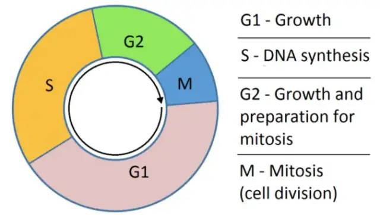 在分析单细胞数据时，同一类型的细胞往往来自于不同的细胞周期阶段，这可能对下游聚类分析，细胞类型注释产生混淆；由于细胞周期也是通过cell cycle related protein 调控，即每个阶段有显著的marker基因；通过分析细胞周期有关基因的表达情况，可以对细胞所处周期阶段进行注释； 在单细胞周期分析时，通常只考虑三个阶段：G1、S、G2M。(即把G2和M当做一个phase) 主要学习两种来自scran与Seurat包鉴定细胞周期的方法介绍与演示。
(1).Seurat包¶
Seurat包CellCycleScoring较scran包cyclone函数最主要的区别是直接根据每个cycle，一组marker基因表达值判断。
library(Seurat)
str(cc.genes)
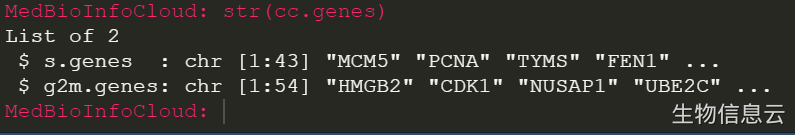
如上是Seurat包提供的人的细胞中分别与S期、G2M期直接相关的marker基因。
CellCycleScoring即根据此，对每个细胞的S期、G2M期可能性进行打分；具体如何计算的，暂时在Seurat官方文档中没有提及。在satijalab的github(https://github.com/satijalab/seurat/issues/728))中，作者这样回复类似的提问：
As we say in the vignette, the scores are computed using an algorithm developed by Itay Tirosh, when he was a postdoc in the Regev Lab (Science et al., 2016). The gene sets are also taken from his work.
You can read the methods section of https://www.ncbi.nlm.nih.gov/pmc/articles/PMC4944528/ to see how the scoring works, but essentially the method scores cells based on the expression of each gene in a signature set - after controlling for the expected expression of genes with similar abundance.
结合一些中文教程（https://www.jianshu.com/p/e4a5b5c67de1)的介绍，认为就是根据每个细胞的S期(或者G2/M期)基因集是否显著高表达，对应的score就是表示在该细胞中，S期(或者G2/M期)基因集高表达的程度(如果是负数，就认为不属于该phase)。
 区别于scran包的另外重要的一点就是Seurat包仅提供了人类细胞有关的cell cycle related gene，没有小鼠的。对此，作者这样回复：
区别于scran包的另外重要的一点就是Seurat包仅提供了人类细胞有关的cell cycle related gene，没有小鼠的。对此，作者这样回复：Thanks. We don't provide different capitalizations because this gene list was developed on a human dataset, and we don't want to create ambiguity by suggesting its created from a mouse reference dataset. **In practice however, we've found it works quite well for mouse also, and recommend the solution above.**
简言之，作者认为可以将对应人的cc.gene转换为鼠对应的基因名，当做后者的cell cycle related gene（因为鼠和人类基因的高度相似性)。提到的solution就是采用biomaRt包转换一下。这在我之前的教程中有介绍。
convertHumanGeneList <- function(x){
require("biomaRt")
human = useMart("ensembl", dataset = "hsapiens_gene_ensembl")
mouse = useMart("ensembl", dataset = "mmusculus_gene_ensembl")
genesV2 = getLDS(attributes = c("hgnc_symbol"), filters = "hgnc_symbol", values = x , mart = human, attributesL = c("mgi_symbol"), martL = mouse, uniqueRows=T)
humanx <- unique(genesV2[, 2])
# Print the first 6 genes found to the screen
print(head(humanx))
return(humanx)
}
m.s.genes <- convertHumanGeneList(cc.genes$s.genes)
m.g2m.genes <- convertHumanGeneList(cc.genes$g2m.genes)
但是biomaRt包网络不是很稳定，有人也直接提供了转换后的结果（https://github.com/satijalab/seurat/issues/462），直接下载导入到R里即可，下面演示的代码就是用的该结果。
sce.all.filt = NormalizeData(sce.all.filt)##数据标准化
mouse.cc.gene=readRDS("H:/MedBioInfoCloud/analysis/base_files/GeneSet/mouse_cell_cycle_genes/mouse_cell_cycle_genes/mouse_cell_cycle_genes.rds")
sce.all.filt=CellCycleScoring(object = sce.all.filt,
g2m.features = mouse.cc.gene$g2m.genes,
s.features = mouse.cc.gene$s.genes)
p4=VlnPlot(sce.all.filt, features = c("S.Score", "G2M.Score"), group.by = "orig.ident",
ncol = 2, pt.size = 0.1)
ggsave(filename="Vlnplot4_cycle.pdf",plot=p4)
sce.all.filt@meta.data %>% ggplot(aes(S.Score,G2M.Score))+geom_point(aes(color=Phase))+
theme_minimal()
ggsave(filename="cycle_details.pdf" )
# S.Score较高的为S期，G2M.Score较高的为G2M期，都比较低的为G1期
dim(sce.all.filt@meta.data)
head(sce.all.filt@meta.data[,7:9])
plot(sce.all.filt$S.Score,sce.all.filt$G2M.Score,
col=factor(sce.all.filt$Phase),
main="CellCycleScoring")
legend("topleft",inset=.05,
title = "cell cycle",
c("G1","S","G2M"), pch = c(1),col=c("black","green","red"))
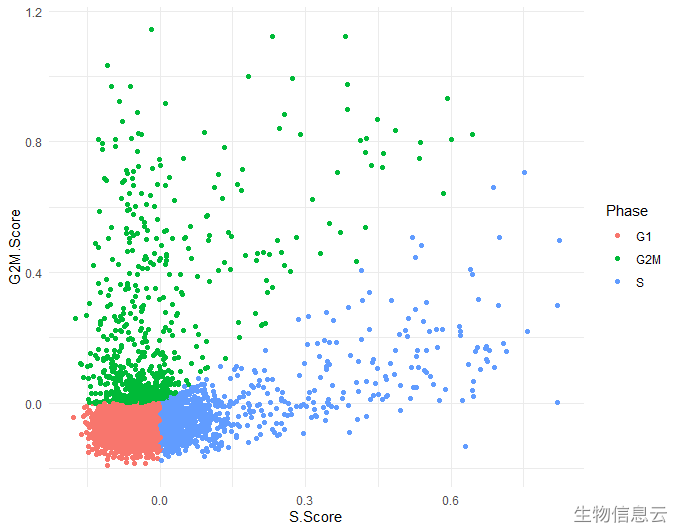
(2).scran包¶
http://bioconductor.org/packages/release/bioc/manuals/scran/man/scran.pdf scran包cyclone函数是利用‘marker基因对’表达来对细胞所在周期阶段进行预测的方法Scialdone (2015) “maker基因对”由作者根据训练集细胞（已注释了cell cycle）的基因表达特征产生，我们可以直接使用。对于每一细胞周期阶段（人/鼠）都有一组“maker基因对”集合。
# BiocManager::install("scran")
library(scran)
mm.pairs <- readRDS(system.file("exdata", "mouse_cycle_markers.rds",
package="scran"))
str(mm.pairs)
head(mm.pairs$G1)
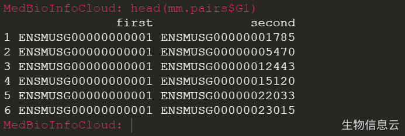 如上图，具体来说，即比较某个细胞的ENSMUSG00000000001基因表达值是否大于ENSMUSG00000001785基因表达值。 如果对于所有G1期marker基因对，某个细胞的“first”列基因表达量大于对应的“second”基因的情况越多，则越有把握认为该细胞就是处于G1期（因为越符合训练集特征)。 而cyclone则是通过计算score，即对于某个细胞，符合上述比较关系的marker基因对数占全部marker基因对数的比值。 这里默认提供marker基因对是ensemble格式，如果表达数据提供的是其它类类型的基因ID，比如：SYMBOL，那么我们需要转化一下ID。
###基因转换
library(clusterProfiler)
library(org.Mm.eg.db)
# x <- names(mm.pairs)[1]
trs <- lapply(names(mm.pairs), function(x){
df <- mm.pairs[[x]]
first <- bitr(mm.pairs[[x]][,1],
fromType= "ENSEMBL", toType="SYMBOL",
OrgDb="org.Mm.eg.db")
second <- bitr(mm.pairs[[x]][,2],
fromType= "ENSEMBL", toType="SYMBOL",
OrgDb="org.Mm.eg.db")
df <- df[first$ENSEMBL %in% df$first,]
df <- df[second$ENSEMBL %in% df$second,]
df$first <- lapply(df$first, function(x){
first[first$ENSEMBL == x,2][1]
}) %>% unlist()
df$second <- lapply(df$second, function(x){
second[second$ENSEMBL == x,2][1]
}) %>% unlist()
return(df)
})
names(trs) <- names(mm.pairs)
# BiocManager::install("scran")
library(scran)
hs.pairs <- readRDS(system.file("exdata", "human_cycle_markers.rds",
package="scran"))
str(hs.pairs)
head(hs.pairs$G1)
###基因转换
library(clusterProfiler)
library(org.Hs.eg.db)
# x <- names(hs.pairs)[1]
htrs <- lapply(names(hs.pairs), function(x){
df <- hs.pairs[[x]]
first <- bitr(hs.pairs[[x]][,1],
fromType= "ENSEMBL", toType="SYMBOL",
OrgDb="org.Hs.eg.db")
second <- bitr(hs.pairs[[x]][,2],
fromType= "ENSEMBL", toType="SYMBOL",
OrgDb="org.Hs.eg.db")
df <- df[first$ENSEMBL %in% df$first,]
df <- df[second$ENSEMBL %in% df$second,]
df$first <- lapply(df$first, function(x){
first[first$ENSEMBL == x,2][1]
}) %>% unlist()
df$second <- lapply(df$second, function(x){
second[second$ENSEMBL == x,2][1]
}) %>% unlist()
return(df)
})
names(htrs) <- names(hs.pairs)
下面是计算三个周期阶段的scores：
assigned <- cyclone(sce.all.filt@assays[["RNA"]]@data, pairs=trs)
head(assigned$scores)
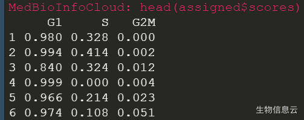 根据每一个细胞对于三个周期阶段的scores，可进行判断；具体规则为 G1或G2M评分高于0.5的细胞分别被分配到G1期或G2M期。若G1 or G2M phases均小于0.5，则可判断为S期(虽然可以直接看S期的score)；若G1 or G2M phases均大于0.5，则 the higher score is used for assignment。
5.检测doublets¶
#检测doublets
sce.all.filt = FindVariableFeatures(sce.all.filt)
sce.all.filt = ScaleData(sce.all.filt,
vars.to.regress = c("nFeature_RNA", "percent_mito"))
sce.all.filt = RunPCA(sce.all.filt, npcs = 20)
sce.all.filt = RunTSNE(sce.all.filt, npcs = 20)
sce.all.filt = RunUMAP(sce.all.filt, dims = 1:10)
# define the expected number of doublet cellscells.
6.单细胞多样本整合¶
CCA和RPCA整合方法都是Seurat包内置并推荐使用的。区别在于： CCA 方法非常适合在细胞类型保守的情况下识别锚点，但在不同实验处理下基因表达存在非常大的差异，
- 简而言之，CCA适合多个样本具有大致相似的细胞类型分布，也适合跨物种的多样本整合。
- 值得注意的是，CCA方法可能会导致整合过度，即可能会消除多样本间的生物学差异；
而RPCA方法的整合运行速度更快，整合的力度较CCA弱一些（更保守），
- 适合多个样本有不同的细胞类型分布情况；
- 建议多样本数据均是来自同一个平台的，例如要整合的目的样本均来自10X测序平台；
- 如大样本量的单细胞数据集整合。
###### step3:合并2个数据集######
setwd('../')
dir.create("2-int")
getwd()
setwd("2-int")
# sce.all=readRDS("../1-QC/sce.all_qc.rds")
sce.all=sce.all.filt
sce.all
#拆分为*个seurat子对象
sce.all.list <- SplitObject(sce.all, split.by = "orig.ident")
sce.all.list
for (i in 1:length(sce.all.list)) {
print(i)
sce.all.list[[i]] <- NormalizeData(sce.all.list[[i]], verbose = FALSE)
sce.all.list[[i]] <- FindVariableFeatures(sce.all.list[[i]], selection.method = "vst",
nfeatures = 2000, verbose = FALSE)
}
FindIntegrationAnchors函数中的reduction参数进行设置： Dimensional reduction to perform when finding anchors. Can be one of:
- cca: Canonical correlation analysis
- rpca: Reciprocal PCA
- rlsi: Reciprocal LSI
#CCA
alldata.anchors <- FindIntegrationAnchors(object.list = sce.all.list, dims = 1:30,
reduction = "cca")
#Perform dataset integration using a pre-computed AnchorSet.
sce.all.int <- IntegrateData(anchorset = alldata.anchors, dims = 1:30, new.assay.name = "CCA")
names(sce.all.int@assays)
#[1] "RNA" "CCA"
sce.all.int@active.assay
#[1] "CCA"
sce.all.int=ScaleData(sce.all.int)
sce.all.int=RunPCA(sce.all.int, npcs = 30)
sce.all.int=RunTSNE(sce.all.int, dims = 1:30)
sce.all.int=RunUMAP(sce.all.int, dims = 1:30)
names(sce.all.int@reductions)
names(sce.all@reductions)
colnames(sce.all@meta.data)
p1.compare=plot_grid(ncol = 3,
DimPlot(sce.all, reduction = "pca", group.by = "orig.ident")+NoAxes()+ggtitle("PCA raw_data"),
DimPlot(sce.all, reduction = "tsne", group.by = "orig.ident")+NoAxes()+ggtitle("tSNE raw_data"),
DimPlot(sce.all, reduction = "umap", group.by = "orig.ident")+NoAxes()+ggtitle("UMAP raw_data"),
DimPlot(sce.all.int, reduction = "pca", group.by = "orig.ident")+NoAxes()+ggtitle("PCA integrated"),
DimPlot(sce.all.int, reduction = "tsne", group.by = "orig.ident")+NoAxes()+ggtitle("tSNE integrated"),
DimPlot(sce.all.int, reduction = "umap", group.by = "orig.ident")+NoAxes()+ggtitle("UMAP integrated")
)
p1.compare
ggsave(plot=p1.compare,filename="Before&After_int.pdf")
colnames(sce.all@meta.data)
整合前后： 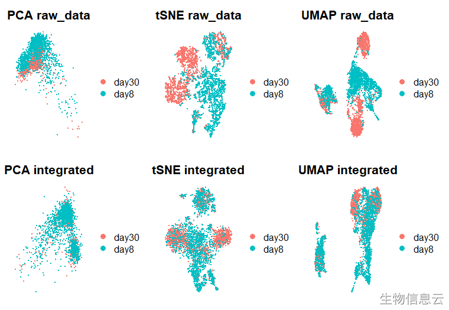
7.聚类¶
###### cluster######
sce.all.int
sce.all
sce.all=sce.all.int
sce.all@active.assay
sce.all=FindNeighbors(sce.all, dims = 1:30, k.param = 60, prune.SNN = 1/15)
#设置不同的分辨率，观察分群效果(选择哪一个？)
for (res in c(0.01, 0.05, 0.1, 0.2, 0.3, 0.5,0.8,1)) {
sce.all=FindClusters(sce.all, graph.name = "CCA_snn", resolution = res, algorithm = 1)
}
apply(sce.all@meta.data[,grep("CCA_snn_res",colnames(sce.all@meta.data))],2,table)
p1_dim=plot_grid(ncol = 3, DimPlot(sce.all, reduction = "umap", group.by = "CCA_snn_res.0.01") +
ggtitle("louvain_0.01"), DimPlot(sce.all, reduction = "umap", group.by = "CCA_snn_res.0.1") +
ggtitle("louvain_0.1"), DimPlot(sce.all, reduction = "umap", group.by = "CCA_snn_res.0.2") +
ggtitle("louvain_0.2"))
ggsave(plot=p1_dim, filename="Dimplot_diff_resolution_low.pdf",width = 14)
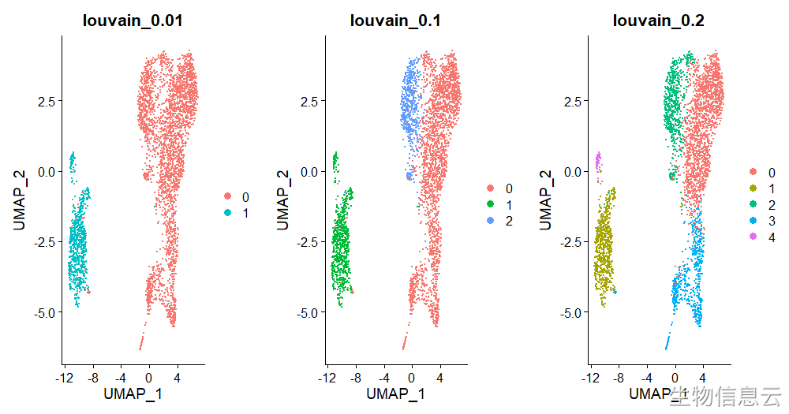
p1_dim=plot_grid(ncol = 3, DimPlot(sce.all, reduction = "umap", group.by = "CCA_snn_res.0.8") +
ggtitle("louvain_0.8"), DimPlot(sce.all, reduction = "umap", group.by = "CCA_snn_res.1") +
ggtitle("louvain_1"), DimPlot(sce.all, reduction = "umap", group.by = "CCA_snn_res.0.3") +
ggtitle("louvain_0.3"))
ggsave(plot=p1_dim, filename="Dimplot_diff_resolution_high.pdf",width = 18)
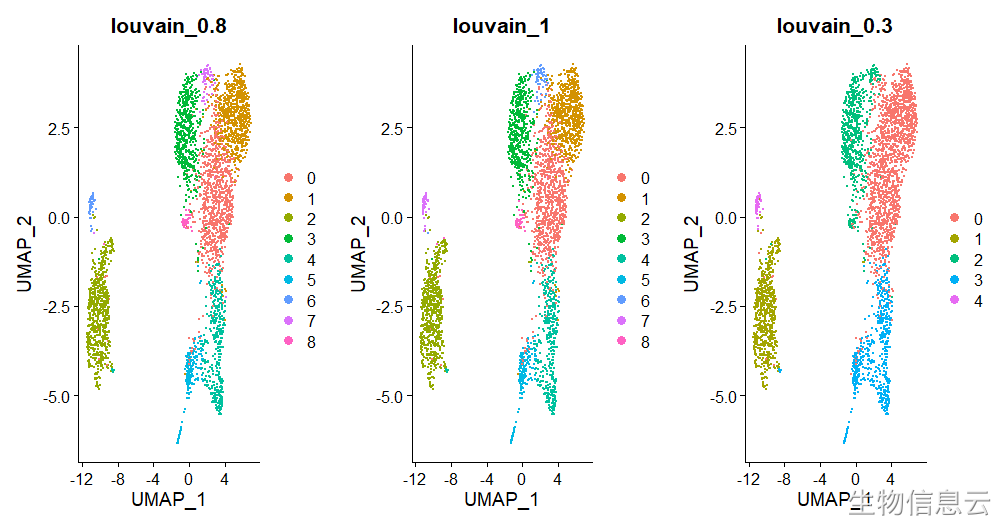
p2_tree=clustree(sce.all@meta.data, prefix = "CCA_snn_res.")
ggsave(plot=p2_tree, filename="Tree_diff_resolution.pdf")
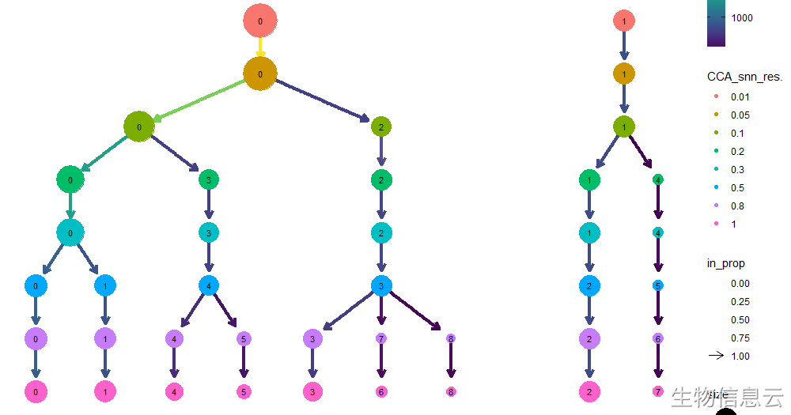
#接下来分析，按照分辨率为0.8进行
sel.clust = "CCA_snn_res.0.8"
sce.all <- SetIdent(sce.all, value = sel.clust)
table(sce.all@active.ident)
saveRDS(sce.all, "sce.all_int.rds")
8.细胞类型注释¶
setwd('../')
dir.create("3-cell")
setwd("3-cell")
#sce.all=readRDS( "../2-int/sce.all_int.rds")
sce.all
sce.all
DimPlot(sce.all, reduction = "umap", group.by = "seurat_clusters",label = T)
DimPlot(sce.all, reduction = "umap", group.by = "CCA_snn_res.0.8",label = T)
ggsave('umap_by_CCA_snn_res.0.8.pdf')
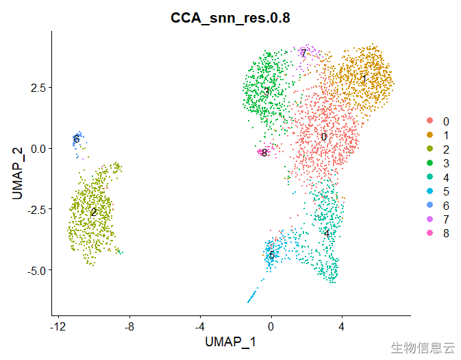
# T Cells (CD3D, CD3E, CD8A),
# B cells (CD19, CD79A, MS4A1 [CD20]),
# Plasma cells (IGHG1, MZB1, SDC1, CD79A),
# Monocytes and macrophages (CD68, CD163, CD14),
# NK Cells (FGFBP2, FCG3RA, CX3CR1),
# Photoreceptor cells (RCVRN),
# Fibroblasts (FGF7, MME),
# Endothelial cells (PECAM1, VWF).
# epi or tumor (EPCAM, KRT19, PROM1, ALDH1A1, CD24).
# immune (CD45+,PTPRC), epithelial/cancer (EpCAM+,EPCAM),
# stromal (CD10+,MME,fibo or CD31+,PECAM1,endo)
library(ggplot2)
genes_to_check = c('PTPRC', 'CD3D', 'CD3E', 'CD4','CD8A','CD19', 'CD79A', 'MS4A1' ,
'IGHG1', 'MZB1', 'SDC1',
'CD68', 'CD163', 'CD14',
'TPSAB1' , 'TPSB2', # mast cells,
'MKI67','TOP2A','KLRC1',
'RCVRN','FPR1' , 'ITGAM' ,
'FGF7','MME', 'ACTA2',
'PECAM1', 'VWF',
'KLRB1','NCR1', # NK
'EPCAM' , 'KRT19', 'PROM1', 'ALDH1A1',
'MKI67' ,'TOP2A' )
library(stringr)
genes_to_check = str_to_title(unique(genes_to_check))
genes_to_check
p_all_markers <- DotPlot(sce.all, features = genes_to_check,
assay='RNA' ) + coord_flip()
p_all_markers
ggsave(plot=p_all_markers, filename="check_all_marker_by_seurat_cluster.pdf")
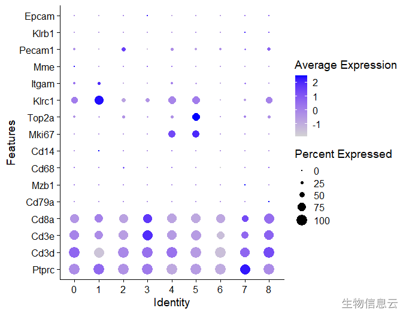
genes_to_check = c('PTPRC', 'CD3D', 'CD3E', 'CD4','CD8A',
'CCR7', 'SELL' , 'TCF7','CXCR6' , 'ITGA1',
'FOXP3', 'IL2RA', 'CTLA4','GZMB', 'GZMK','CCL5',
'IFNG', 'CCL4', 'CCL3' ,
'PRF1' , 'NKG7')
library(stringr)
genes_to_check=str_to_title(genes_to_check)
genes_to_check
p <- DotPlot(sce.all, features = genes_to_check,
assay='RNA' ) + coord_flip()
p
ggsave(plot=p, filename="check_Tcells_marker_by_seurat_cluster.pdf")
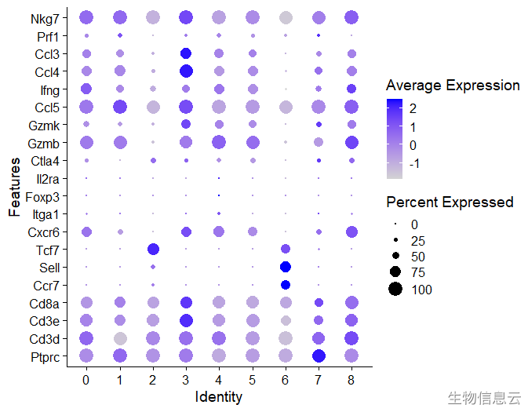
# mast cells, TPSAB1 and TPSB2
# B cell, CD79A and MS4A1 (CD20)
# naive B cells, such as MS4A1 (CD20), CD19, CD22, TCL1A, and CD83,
# plasma B cells, such as CD38, TNFRSF17 (BCMA), and IGHG1/IGHG4
genes_to_check = c('CD3D','MS4A1','CD79A',
'CD19', 'CD22', 'TCL1A', 'CD83', # naive B cells
'CD38','TNFRSF17','IGHG1','IGHG4', # plasma B cells,
'TPSAB1' , 'TPSB2', # mast cells,
'PTPRC' )
library(stringr)
genes_to_check=str_to_title(genes_to_check)
genes_to_check
p <- DotPlot(sce.all, features = genes_to_check,
assay='RNA' ) + coord_flip()
p
ggsave(plot=p, filename="check_Bcells_marker_by_seurat_cluster.pdf")
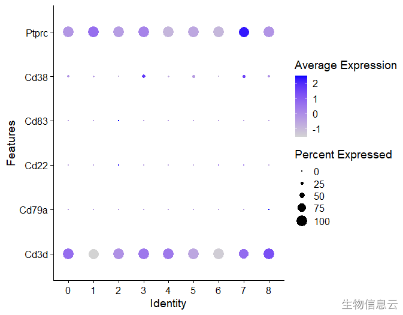
genes_to_check = c('CD68', 'CD163', 'CD14', 'CD86','C1QA', 'C1QB', # mac
'S100A9', 'S100A8', 'MMP19',# monocyte
'LAMP3', 'IDO1','IDO2',## DC3
'MRC1','MSR1','ITGAE','ITGAM','ITGAX','SIGLEC7',
'CD1E','CD1C', # DC2
'XCR1','CLEC9A','FCER1A',# DC1
'GZMB','TCF4','IRF7')
library(stringr)
genes_to_check=str_to_title(genes_to_check)
genes_to_check
p <- DotPlot(sce.all, features = unique(genes_to_check),
assay='RNA' ) + coord_flip()
p
ggsave(plot=p, filename="check_Myeloid_marker_by_seurat_cluster.pdf")
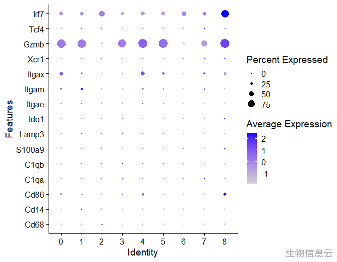
# epi or tumor (EPCAM, KRT19, PROM1, ALDH1A1, CD24).
# - alveolar type I cell (AT1; AGER+)
# - alveolar type II cell (AT2; SFTPA1)
# - secretory club cell (Club; SCGB1A1+)
# - basal airway epithelial cells (Basal; KRT17+)
# - ciliated airway epithelial cells (Ciliated; TPPP3+)
genes_to_check = c( 'EPCAM' , 'KRT19', 'PROM1', 'ALDH1A1' ,
'AGER','SFTPA1','SCGB1A1','KRT17','TPPP3',
'KRT4','KRT14','KRT8','KRT18',
'CD3D','PTPRC' )
library(stringr)
genes_to_check=str_to_title(genes_to_check)
genes_to_check
p <- DotPlot(sce.all, features = unique(genes_to_check),
assay='RNA' ) + coord_flip()
p
ggsave(plot=p, filename="check_epi_marker_by_seurat_cluster.pdf")
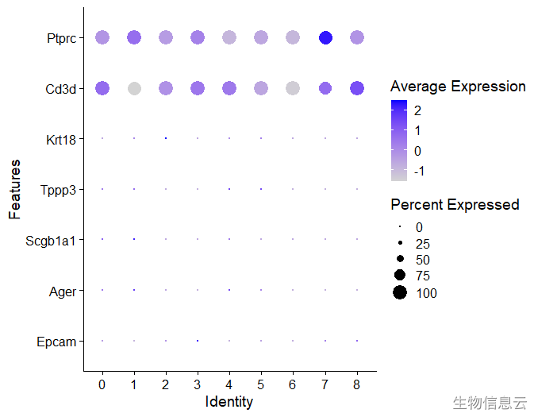
genes_to_check = c('TEK',"PTPRC","EPCAM","PDPN","PECAM1",'PDGFRB',
'CSPG4','GJB2', 'RGS5','ITGA7',
'ACTA2','RBP1','CD36', 'ADGRE5','COL11A1','FGF7', 'MME')
library(stringr)
genes_to_check=str_to_title(genes_to_check)
genes_to_check
p <- DotPlot(sce.all, features = unique(genes_to_check),
assay='RNA' ) + coord_flip()
p
ggsave(plot=p, filename="check_stromal_marker_by_seurat_cluster.pdf")
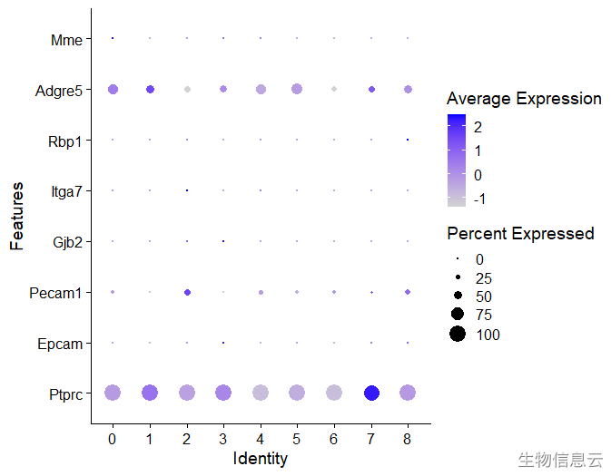
p_all_markers
p_umap=DimPlot(sce.all, reduction = "umap", label = T)
library(patchwork)
p_all_markers+p_umap
ggsave('markers_umap.pdf',width = 22)
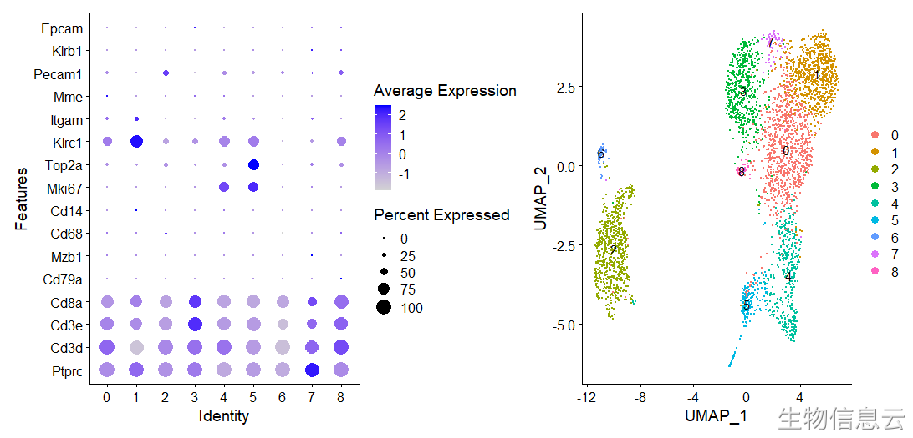
sce=sce.all
table(Idents(sce))
sce.markers <- FindAllMarkers(object = sce, only.pos = TRUE, min.pct = 0.25,
thresh.use = 0.25)
DT::datatable(sce.markers)
pro='basic_seurat'
write.csv(sce.markers,file=paste0(pro,'_sce.markers.csv'))
library(dplyr)
top10 <- sce.markers %>% group_by(cluster) %>% top_n(10, avg_log2FC)
DoHeatmap(sce,top10$gene,size=3)
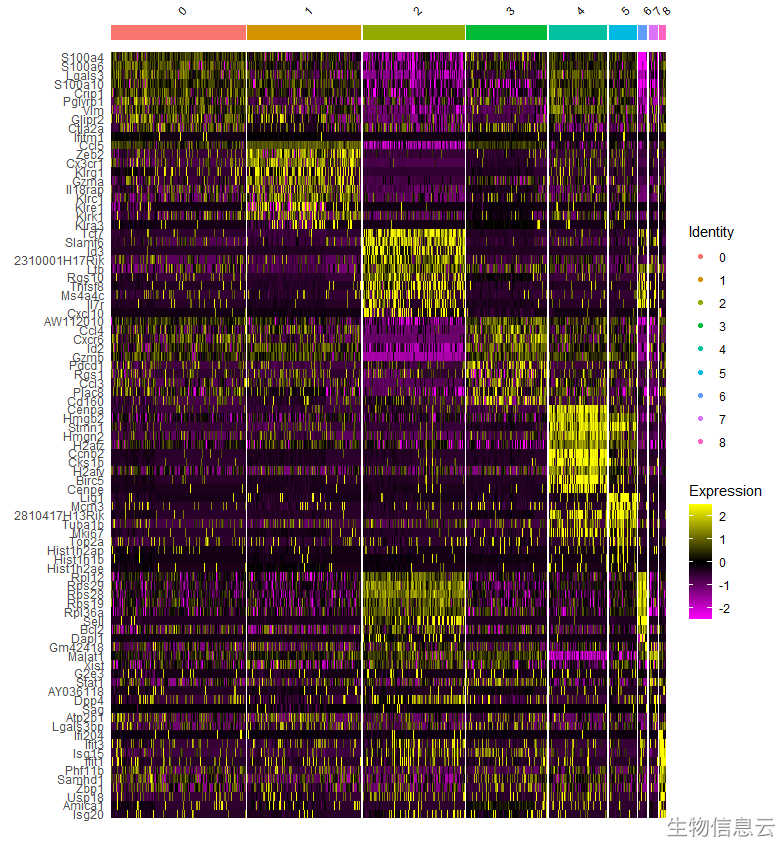
p <- DotPlot(sce, features = unique(top10$gene),
assay='RNA' ) + coord_flip()
p
ggsave(paste0(pro,'DotPlot_check_top10_markers_by_clusters.pdf'),height = 11)
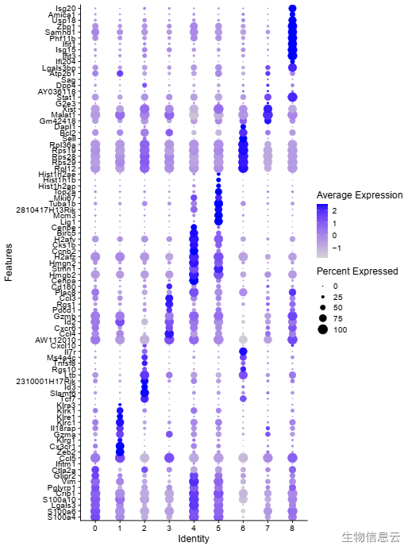
library(dplyr)
top3 <- sce.markers %>% group_by(cluster) %>% top_n(3, avg_log2FC)
DoHeatmap(sce,top3$gene,size=3)
ggsave(paste0(pro,'DoHeatmap_check_top3_markers_by_clusters.pdf'))
p <- DotPlot(sce, features = unique(top3$gene),
assay='RNA' ) + coord_flip()
p
ggsave(paste0(pro,'DotPlot_check_top3_markers_by_clusters.pdf'),height = 11)
save(sce.markers,file = paste0(pro,'sce.markers.Rdata'))
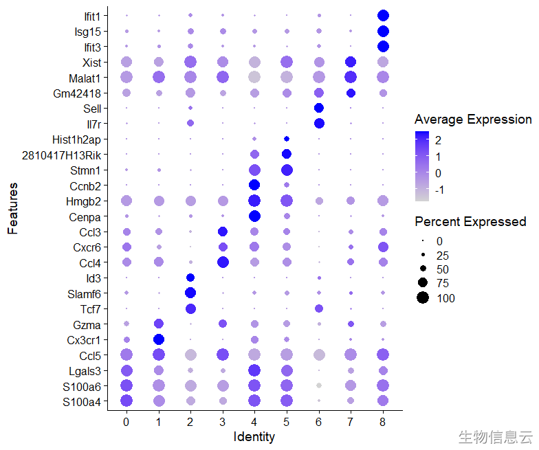
sce.all=readRDS( "../2-int/sce.all_int.rds")
# T Cells (CD3D, CD3E, CD8A),
# B cells (CD19, CD79A, MS4A1 [CD20]),
# Plasma cells (IGHG1, MZB1, SDC1, CD79A),
# Monocytes and macrophages (CD68, CD163, CD14),
# NK Cells (FGFBP2, FCG3RA, CX3CR1),
# Photoreceptor cells (RCVRN),
# Fibroblasts (FGF7, MME),
# Endothelial cells (PECAM1, VWF).
# epi or tumor (EPCAM, KRT19, PROM1, ALDH1A1, CD24).
# immune (CD45+,PTPRC), epithelial/cancer (EpCAM+,EPCAM),
# stromal (CD10+,MME,fibo or CD31+,PECAM1,endo)
# TH17 cells (C-12, CCR6+ and RORC)
# type 1 helper T cells (TH1; C-17, CXCR3+ and IFNG and TBX21)
# heterogeneous continuum of intermediate TH1/TH17 states (C-13, C-16 and C-19)
# with varying degrees of CXCR3, CCR6, CCR5 and CD161 surface protein expression and RORC and TBX21 expression
# CD161+ subset of type 2 helper T (TH2) cells (C-14),
# described as pathogenic, with higher expression of allergy-associated HPGDS and IL17RB
# naive (LEF1, SELL, TCF7),
# effector (IFNG),
# cytotoxicity (GZMB, PRF1),
# early and general exhaustion (PDCD1, CTLA4, ENTPD1 ) .
# antigen presentation (CD74, HLA-DRB1/5, HLA-DQA2)
# FCGR3A (FCGR3A+ Monocyte), KLRF1 (NK), FCER1A (DC), and PF4 (MP/platelets).
library(ggplot2)
genes_to_check = c('PTPRC', 'CD3D', 'CD3E', 'CD4','CD8A',
'LEF1', 'SELL' , 'TCF7', # naive
'FOXP3',
'CCR6', 'RORC' , # 几乎不表达 TH17 cells
'TBX21', 'CXCR3', 'IFNG', # 微弱表达 type 1 helper T cells
'CCR3','CCR4',
'PDCD1', 'CTLA4','ENTPD1', # early and general exhaustion
'GZMB', 'GZMK','PRF1', # cytotoxicity
'IFNG', 'CCL3' ,'CXCR6' , 'ITGA1', # effector
'NKG7','KLRF1','MKI67','PF4','FCER1A','FCGR3A')
library(stringr)
genes_to_check=str_to_title(genes_to_check)
genes_to_check
p_all_markers <- DotPlot(sce.all, features = unique(genes_to_check),
group.by = "CCA_snn_res.0.8",assay='RNA' ) + coord_flip()
p_all_markers
ggsave(plot=p_all_markers, filename="check_all_marker_by_CCA_snn_res.0.8.pdf")
colnames(sce.all@meta.data)
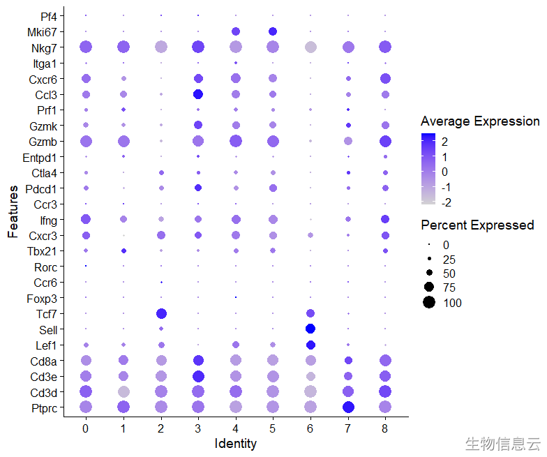
p_umap=DimPlot(sce.all, reduction = "umap",
group.by = "CCA_snn_res.0.8",label = T)
p_umap
ggsave('umap_by_CCA_snn_res.0.8.pdf',width = 15)
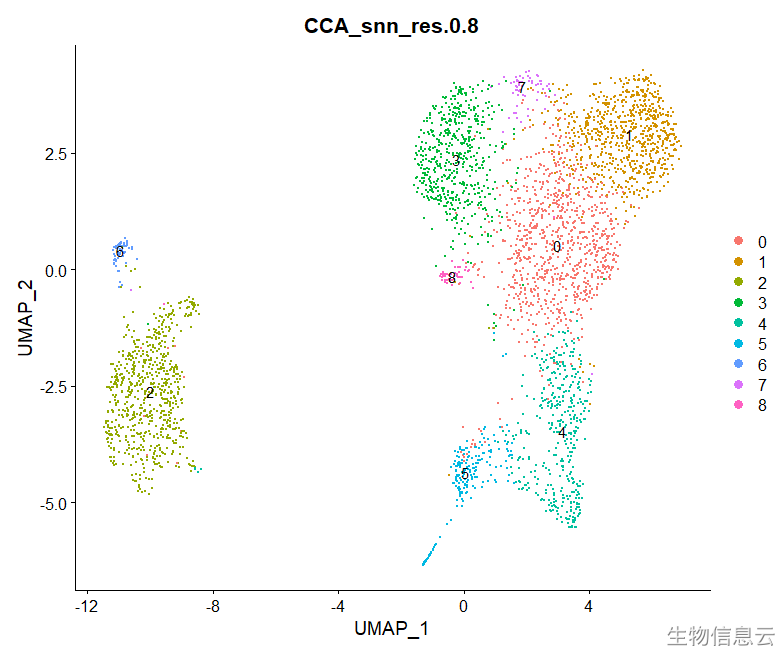
library(patchwork)
p_all_markers+p_umap
ggsave('umap_and_all_markers_by_CCA_snn_res.0.8.pdf',width = 15)
# CXCR6 (TRM marker), IFIT3 (IFN response marker),
# NME1 (activation marker), PRF1 (cytotoxic marker),
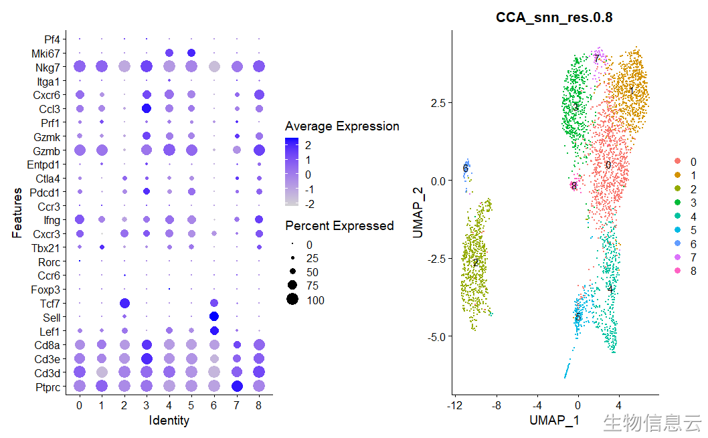
celltype=data.frame(ClusterID=0:8,
celltype='cytotoxic')
celltype[celltype$ClusterID %in% c( 2,6 ),2]='naive'
head(celltype)
celltype
table(celltype$celltype)
sce.all@meta.data$celltype = "NA"
for(i in 1:nrow(celltype)){
sce.all@meta.data[which(sce.all@meta.data$CCA_snn_res.0.8 == celltype$ClusterID[i]),'celltype'] <- celltype$celltype[i]}
table(sce.all@meta.data$celltype)
DimPlot(sce.all, reduction = "umap", group.by = "celltype",label = T)
ggsave('umap_by_celltype.pdf')
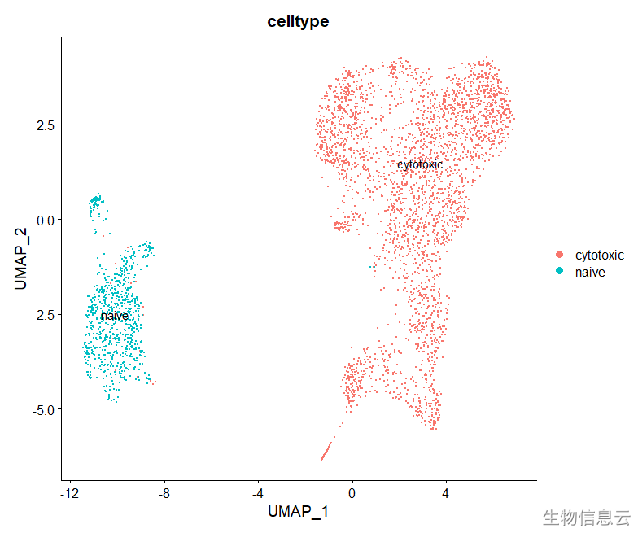
tab.1=table(sce.all@meta.data$celltype,sce.all@meta.data$CCA_snn_res.0.8)
library(gplots)
tab.1
pro='cluster'
pdf(file = paste0(pro,' celltype VS res.0.8.pdf'),width = 12)
balloonplot(tab.1, main =" celltype VS res.0.8 ", xlab ="", ylab="",
label = T, show.margins = F)
dev.off()
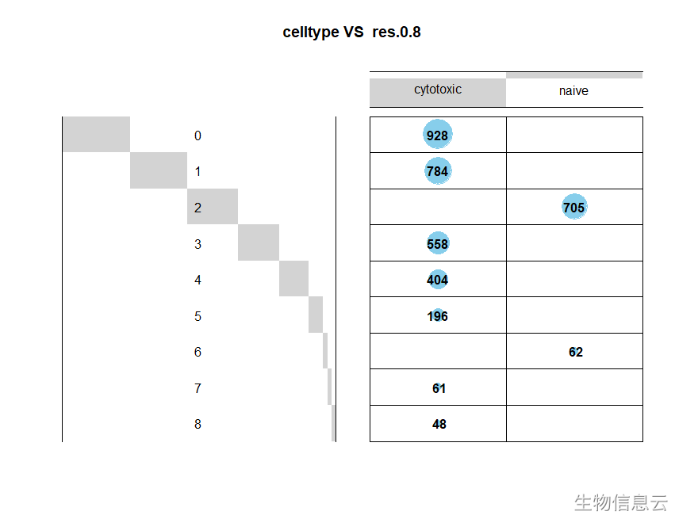
library(patchwork)
th=theme(axis.text.x = element_text(angle = 45,
vjust = 0.5, hjust=0.5))
p_all_markers=DotPlot(sce.all, features = unique(genes_to_check),
assay='RNA' ,group.by = 'celltype' ) + coord_flip()+ th
p_umap=DimPlot(sce.all, reduction = "umap", group.by = "celltype",label = T)
p_all_markers+p_umap
ggsave('markers_umap_by_celltype.pdf',width = 13)
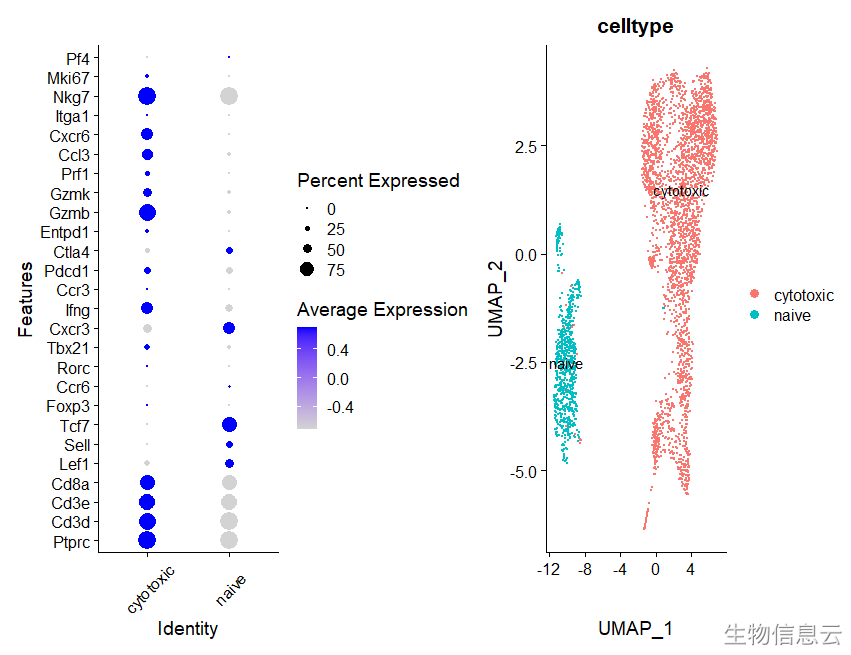
sce=sce.all
Idents(sce)=sce$celltype
table(Idents(sce))
sce.markers <- FindAllMarkers(object = sce, only.pos = TRUE, min.pct = 0.25,
thresh.use = 0.25)
DT::datatable(sce.markers)
pro='celltype_deg'
write.csv(sce.markers,file=paste0(pro,'_sce.markers.csv'))
library(dplyr)
top10 <- sce.markers %>% group_by(cluster) %>% top_n(10, avg_log2FC)
DoHeatmap(sce,top10$gene,size=3)
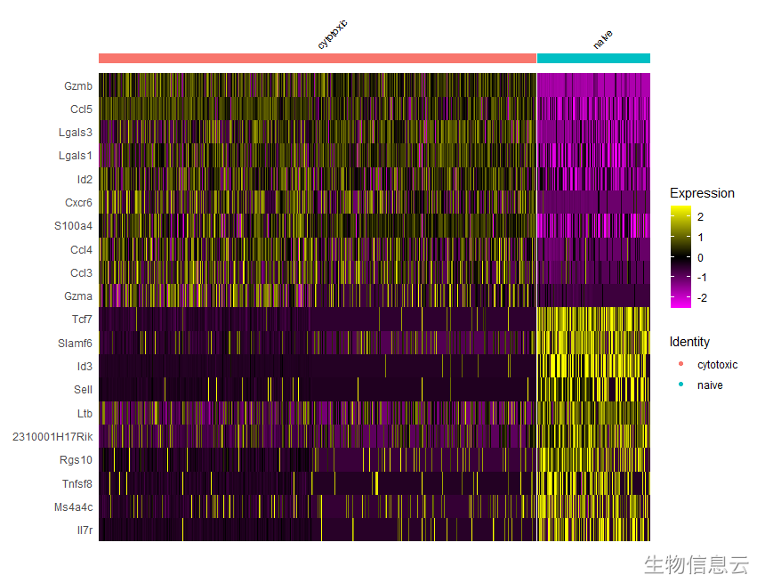
p <- DotPlot(sce, features = unique(top10$gene),
assay='RNA' ) + coord_flip()
p
ggsave(paste0(pro,'DotPlot_check_top10_markers_by_clusters.pdf'),height = 11)
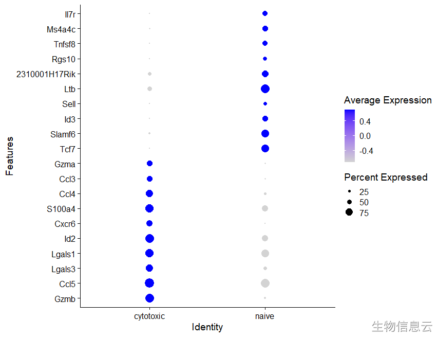
library(dplyr)
top3 <- sce.markers %>% group_by(cluster) %>% top_n(3, avg_log2FC)
DoHeatmap(sce,top3$gene,size=3)
ggsave(paste0(pro,'DoHeatmap_check_top3_markers_by_clusters.pdf'))
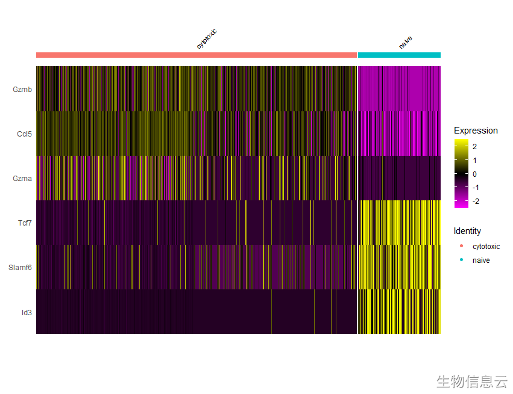
p <- DotPlot(sce, features = unique(top3$gene),
assay='RNA' ) + coord_flip()
p
ggsave(paste0(pro,'DotPlot_check_top3_markers_by_clusters.pdf'),height = 11)
save(sce.markers,file = paste0(pro,'sce.markers.Rdata'))
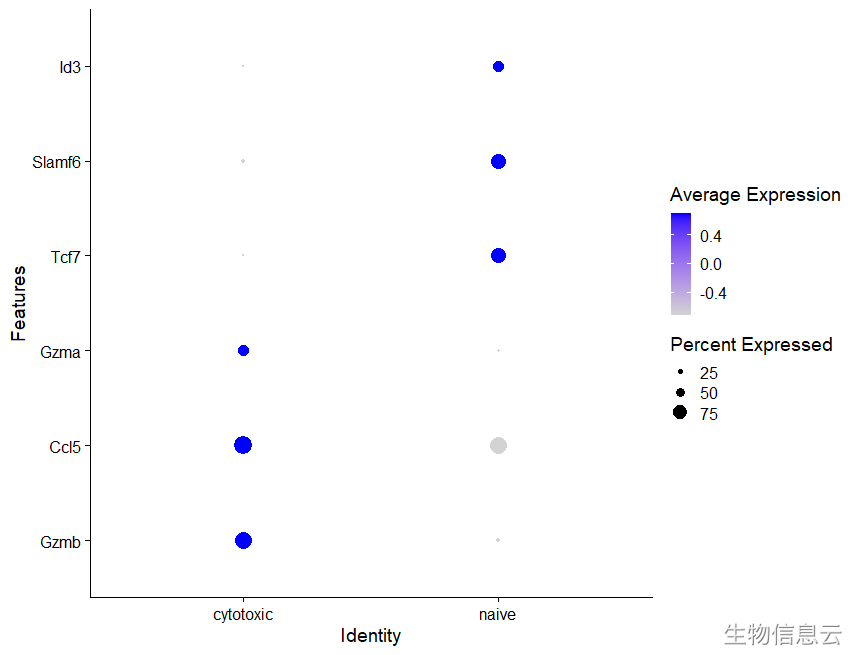